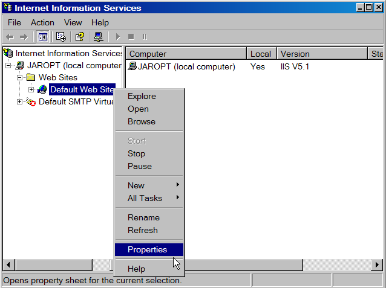
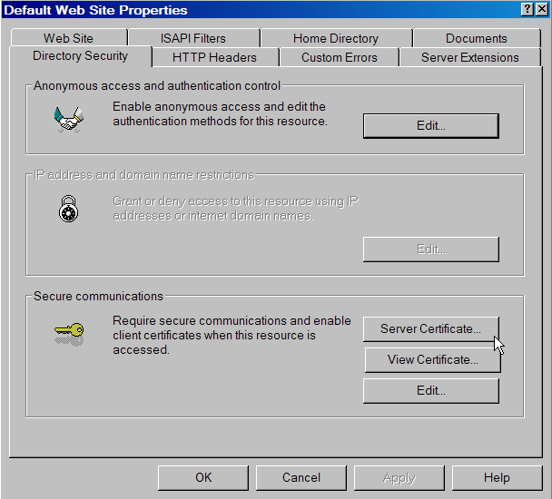
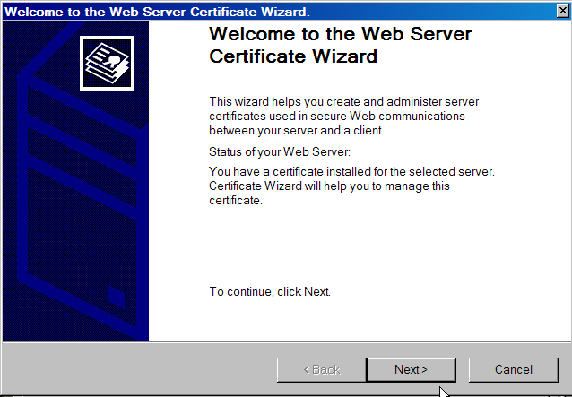

Obtaining a Server Certificate for IIS
For the SensorNet Certificate Authority (CA), the function of the certificate request is to generate a key pair. The private key is stored in a Windows key store, and the public key is sent to the SensorNet CA, where it is extracted and embedded in a certificate that is signed and sent back to you. Therefore, the DN you choose when you run the Certificate Application Wizard will be ignored.
So, the first step is to request a certificate from the CA, Jim Rome (romeja@ornl.gov). The e-mail should contain:
- The ip name of your server
- Your name and e-mail address
- Your phone number
- Your Organization
- Your Organizational Unit
- Your City
- Your State
- Your Country
When your request is approved, you will receive an e-mail telling you where to get the certificate and containing a user ID and password. At that point you will need to generate the certificate request for IIS.
To do this, launch the Internet Information Services management console from the Administrative Tools menu (Fig. 1).

Figure 1.

Figure 2.

Figure 3.

Figure 4.

Figure 5.

Figure 6.